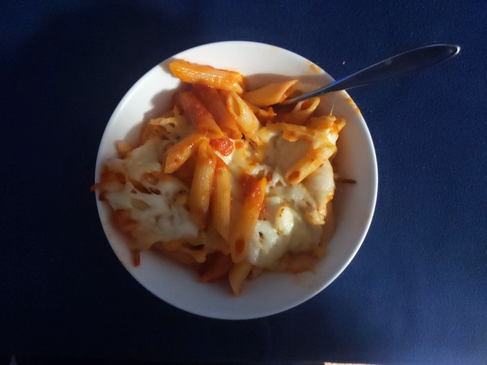
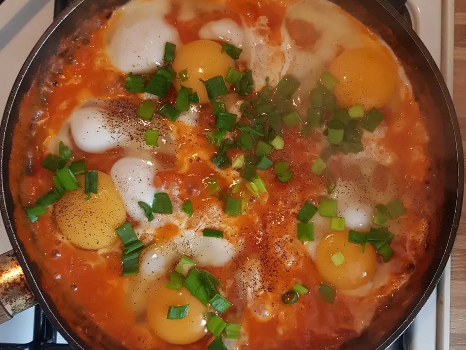

מדריך הצילום: תמונה אחת לכל מנהThe photo guide: one photo per dish
מנה בונה תבליט תלת־ממדי מתמונה אחת של כל מנה. ככל שהתמונה ברורה יותר, התוצאה טובה יותר. חמש דקות עם הדף הזה חוסכות צילום חוזר.
Mana builds a 3D relief from one photo of each dish. The clearer the photo, the better the result. Five minutes with this page saves a reshoot.
שבעה כלליםSeven rules
- מנה אחת בכל תמונה, וכולה בתוך הפריים, עם מעט שוליים מסביב.One dish per photo, all of it inside the frame, with a little margin around it.
- מצלמים מהזווית שבה רואים צלחת כשיושבים לשולחן: בערך 45 מעלות מעליה. צילום ישר מלמעלה יוצא שטוח; צילום מגובה השולחן מסתיר את האוכל.Shoot from the angle you see a plate when you sit down: about 45 degrees above it. Straight from the top comes out flat; from table height hides the food.
- רקע חלק, בצבע שונה מהצלחת. שולחן כהה או מפה כהה הם הכי טובים. צלחת לבנה על מפה לבנה היא המקרה הקשה ביותר.A plain background that is not the plate’s colour. A dark table or cloth is best. A white plate on a white cloth is the hardest case.
- אור רך, בלי פלאש. ליד חלון זה מצוין; שמש ישירה פחות.Soft light, no flash. Next to a window is ideal; direct sun less so.
- בלי ידיים, בלי סכו״ם שחוצה את שפת הצלחת, ובלי מנה שנייה שנוגעת בה.No hands, no cutlery crossing the rim of the plate, and no second dish touching it.
- משקאות: כוס או בקבוק עומדים לבד, מאותה זווית.Drinks: the glass or bottle standing alone, from the same angle.
- טלפון מספיק. צד ארוך של 1,200 פיקסלים מספיק, וכל טלפון מהשנים האחרונות מצלם הרבה יותר. קובץ JPEG הוא הבטוח ביותר.A phone is enough. 1,200 pixels on the long side will do, and any recent phone shoots far more. A JPEG file is the safest.


שתי התמונות הן תמונות טלפון אמיתיות ממאגר פתוח (based.cooking, נחלת הכלל).Both are real phone photos from a public-domain set (based.cooking).
מה בדרך כלל משתבשWhat usually goes wrong
- צלחת שנחתכת בקצה התמונהA plate cut off by the edge of the photo
- תקריב שממלא את כל הפרייםA close-up that fills the whole frame
- שולחן עמוס: כמה מנות, כוסות ומפיות בתמונה אחתA crowded table: several dishes, glasses and napkins in one photo
- צלחת כהה על שולחן כהה: הצלחת נעלמת והאוכל "מרחף" (לפעמים זה עדיין נראה טוב)A dark plate on a dark table: the plate disappears and the food “floats” (sometimes that still looks good)
- חלקים דקים, כמו ידית של מחבת או רגל של כוס יין, עלולים להיעלםThin parts, such as a pan handle or the stem of a wine glass, can go missing
לא כל תמונה מצליחה, וזה בסדר: תמיד אפשר להציג את התמונה כמו שהיא.
Not every photo works, and that is fine: you can always show the photo as it is.
אחרי העיבוד: מה אפשר לעשותAfter processing: what you can do
אתם רואים את התמונה שלכם ליד התוצאה, ובוחרים:
You see your photo next to the result, and choose:
- לאשר, והתבליט נכנס לתפריט.Approve it, and the relief goes into the menu.
- לשנות את העומק: שטוח (פיצה, חומוס), נמוך, בינוני או גבוה (המבורגר, עוגה, קערה). שנייה או שתיים לכל שינוי.Change the depth: flat (pizza, hummus), low, medium or tall (burger, cake, bowl). A second or two per change.
- לנסות שוב, עד 5 ניסיונות לתמונה, או להעלות תמונה אחרת.Try again, up to 5 attempts per photo, or upload a different photo.
- להשתמש בתמונה כמו שהיא. היא תוצג כתמונה מונחת על השולחן, בלי עומק.Use the photo as it is. It is shown as a print lying on the table, with no depth.
עד שלא אישרתם ופרסמתם, אף סועד לא רואה את התמונה.
Until you approve and publish, no guest sees the photo.
לפני שמתחיליםBefore you start
- מומלץ לעבוד ממחשב. אפשר לצלם בטלפון ולהעביר את התמונות למחשב.We recommend working on a computer. Shoot on the phone and move the photos to the computer.
- בפעם הראשונה הדפדפן מוריד כ־72 מ״ב, פעם אחת. עדיף Wi‑Fi. אחר כך כל תמונה לוקחת בערך 10 שניות במחשב נייד.The first time, the browser downloads about 72 MB, once. Wi‑Fi is better. After that each photo takes about 10 seconds on a laptop.
- אייפון שומר תמונות בפורמט HEIC, ולא כל דפדפן פותח אותו. אם תמונה נדחית, שמרו אותה כ‑JPEG (בהגדרות המצלמה: פורמטים, "התואם ביותר").iPhones save photos as HEIC, and not every browser can open it. If a photo is refused, save it as JPEG (Camera settings: Formats, “Most Compatible”).
בדיקה לפני שמדפיסים את הקודA check before you print the code
- פותחים את הקישור בטלפון אמיתי, לא רק בתצוגה המקדימה.Open the link on a real phone, not only in the preview.
- עוברים על כל המנות: אף מנה לא חתוכה, והמשקאות עומדים.Go through every dish: none is cut off, and the drinks stand upright.
- מרימים את שלוש המנות הגבוהות ומטים אותן: אין צדדים מרוחים.Lift the three tallest dishes and tilt them: no smeared sides.
- מחליפים שפה ובודקים שמות ומחירים בעברית ובאנגלית.Switch language and check names and prices in Hebrew and in English.
- שמות, מחירים ואלרגנים תואמים את התפריט שבמסעדה היום.Names, prices and allergens match the menu in the restaurant today.